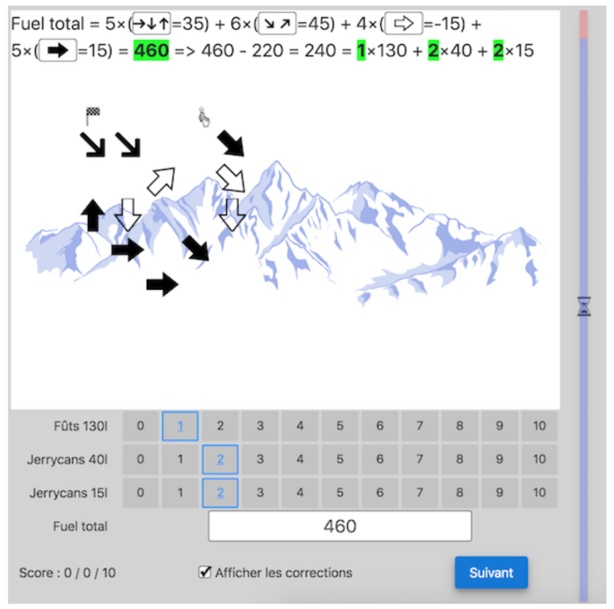
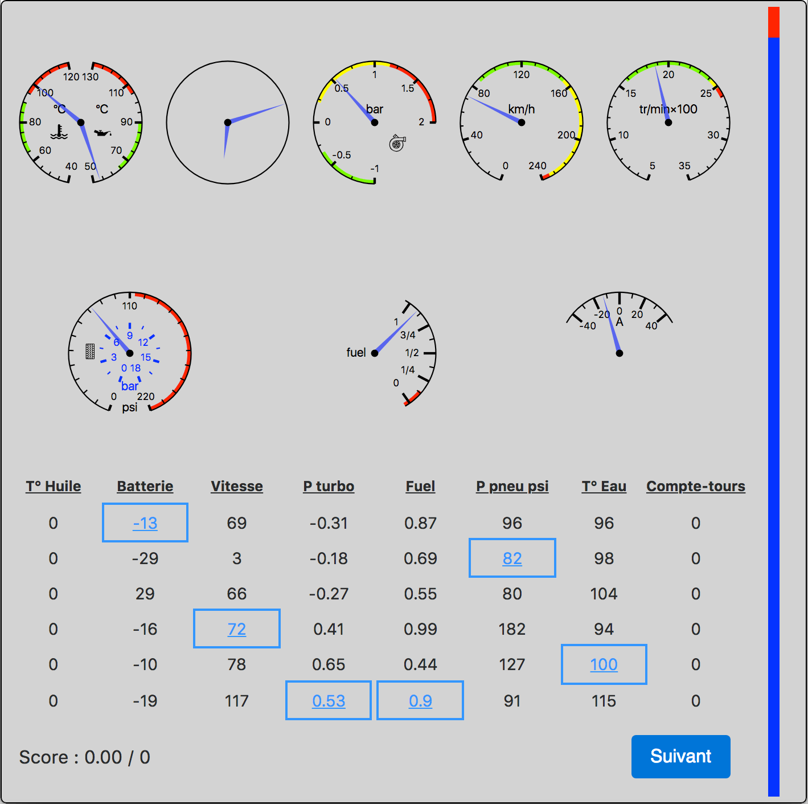
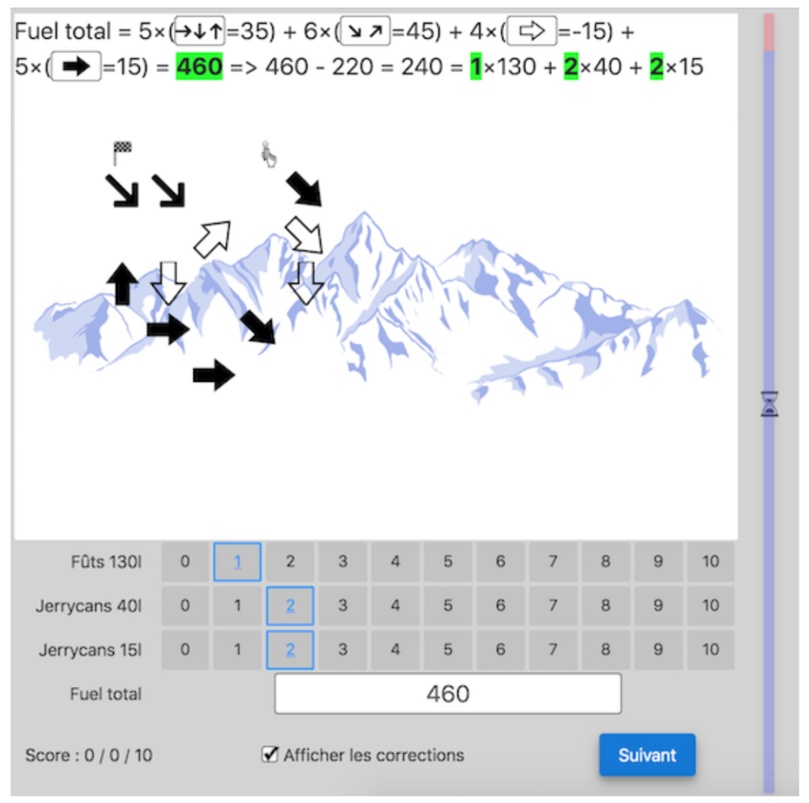
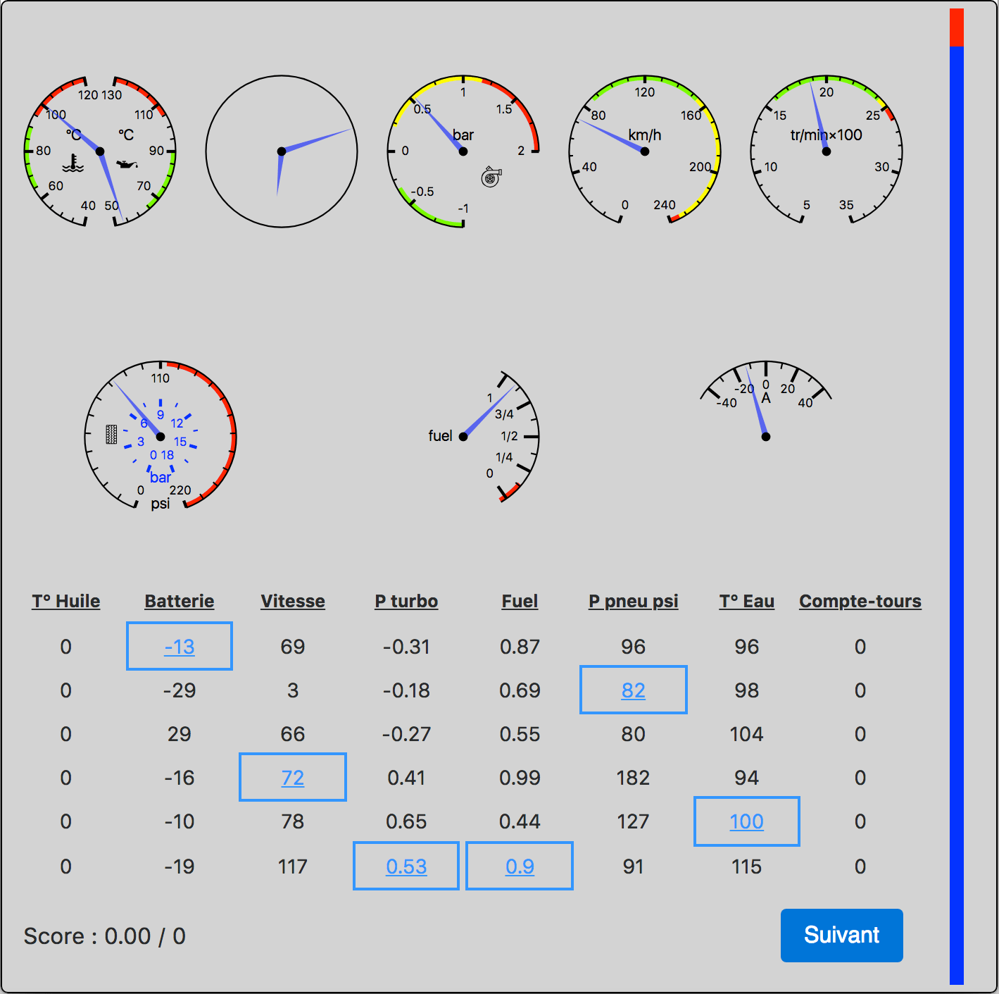
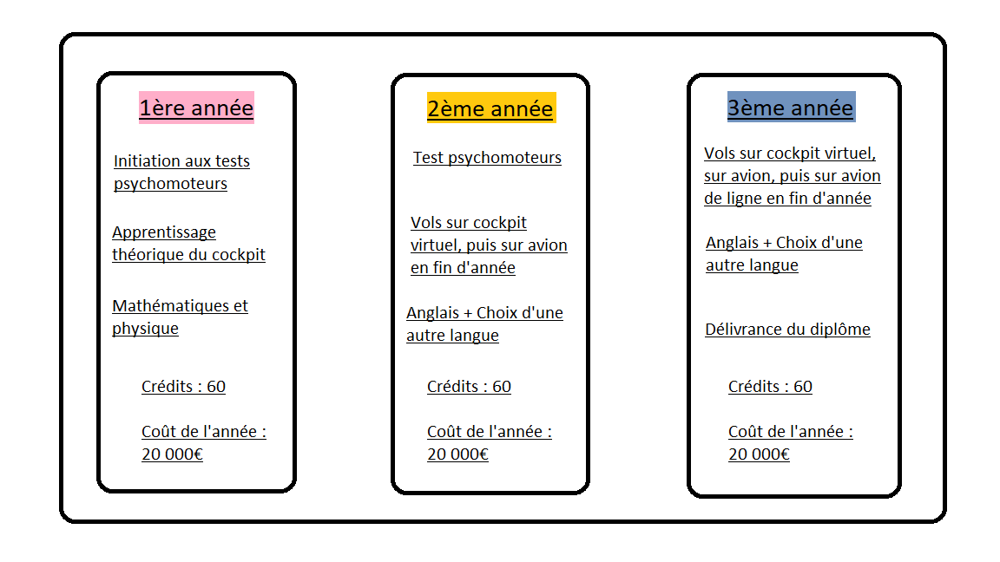
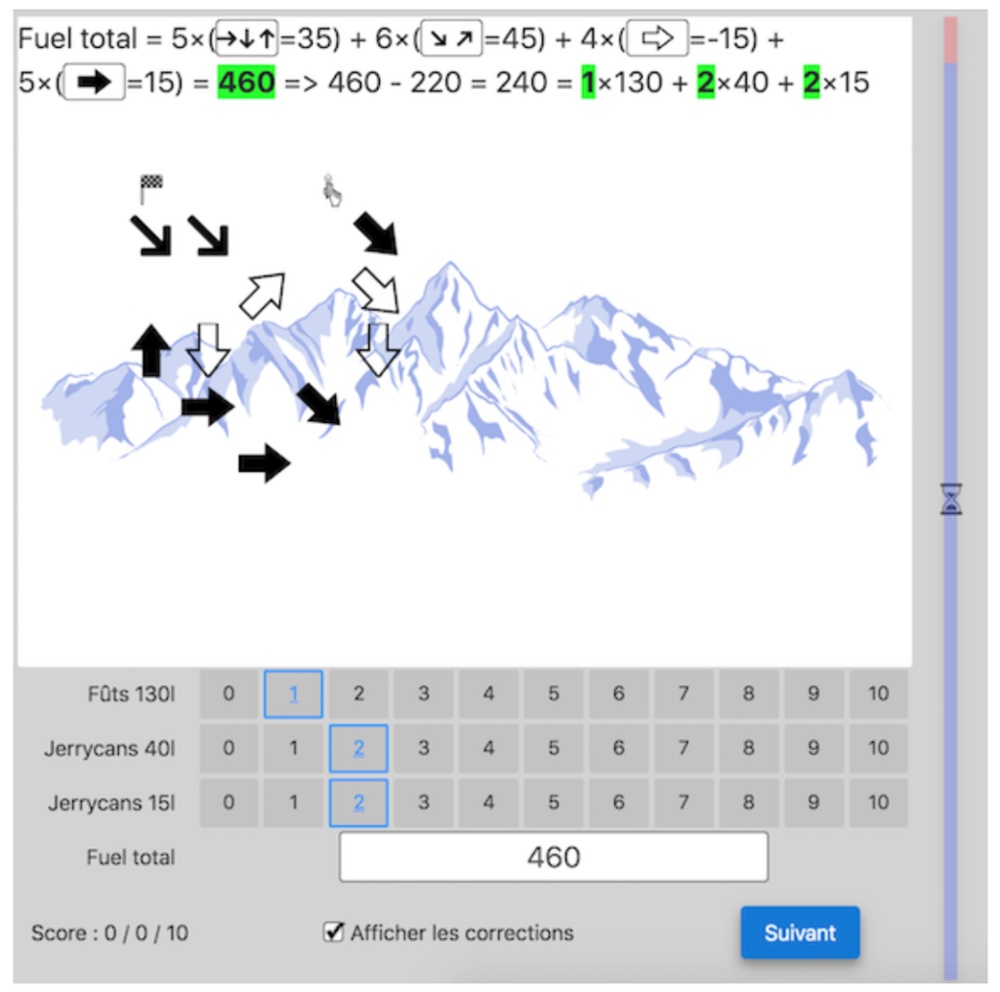
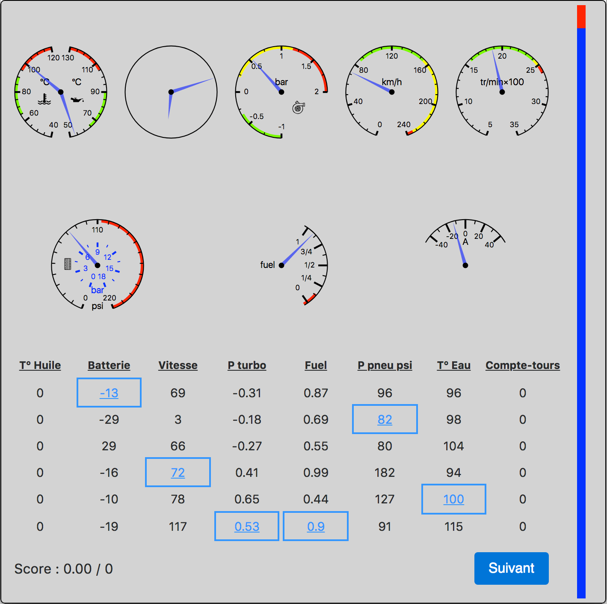

Comme nous l'avons résumé en page d'accueil, nous disposons de plusieurs cours. Ces cours sont accessibles en fonction de votre année au sein des Ptilotes. Il est conseillé d'avoir fait les spécialités Mathématiques ainsi que Physique-Chimie en terminale pour que votre première année se passe sans problèmes.
Le programme se déroule tel quel :
Les tests psychomoteurs consistent en des tests de logique. Ils sont exercés durant les deux premières années.


Il s'agit d'un cours standard que vous avez pu faire au lycée. Cela n'est abordé qu'en première année, pour vérifier que vous disposez d'une bonne gymnastique d'esprit pour pouvoir piloter nos avions.
Comme les mathématiques, la physique est un cours standard que vous avez pu apprendre en spécialité Physique-Chimie. Il s'agit d'un cours explicite en première année, mais sera indirectement exploité durant vos deux autres années.
Si vous effectuez notre parcours à terme, vous voyagerez sans doute à l'étranger. L'anglais est donc un cours obligatoire en première année puisque la plupart des pays parlent cette langue. Ce cours peut être pris en option durant les deux dernières années.
Avant de pouvoir entrer dans un avion, vous devez d'abord comprendre le fonctionnement de ses différentes commandes. L'initiation aux commandes de l'avion permettra de vous familiariser avec la constitution et les fonctions disponible dans un avion ordinaire. Ce cours sera établi en première année.
L'apprentissage du cockpit virtuel est la deuxième étape pour obtenir la clé du diplôme final. Initié en deuxième année et approfondie en troisième année, ce cours vous permettra de ressentir les véritables sensations fortes d'un avion, sans y être.
Il s'agit là de votre premier essai sur le terrain. Ce module, effectué en deuxième année et disponible en option en troisième année, vous permettra de piloter un petit avion sur un aéroport local. En fin de deuxième année aura lieu un test final sur ce module. Si vous le passez, vous obtiendrez le diplôme sur avion privé.
L'apprentissage sur avion de ligne est votre dernière étape pour obtenir le diplôme final. C'est l'un des cours les plus importants de la troisème année, et il vous permettra de faire des tests avec de véritables avions de ligne. En début d'année, vous ne verrez que la composition d'un avion de ligne et resterez dans le même aéroport que l'avion. En fin d'année et pendant votre test final parmi les Ptilotes, vous devrez piloter un avion de ligne sur une longue durée et atterrir dans l'aéroport de l'un de nos partenariats situé à l'étranger. En réussissant notre test final, vous obtiendrez le diplôme sur avion de ligne, qui sera aussi votre diplôme final.
© 2021, PTILOTES.INC
Powered by Idriss & Frédéric
Crédits : Monsieur Okabe, Monsieur Hellouin de Menibus
Plan du site - Information légal - Politique de confidentialité - Gestion de cookies